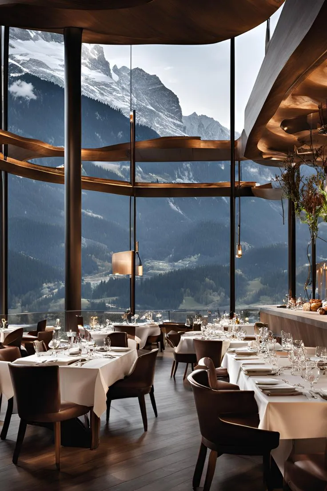
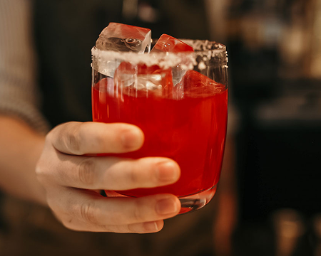
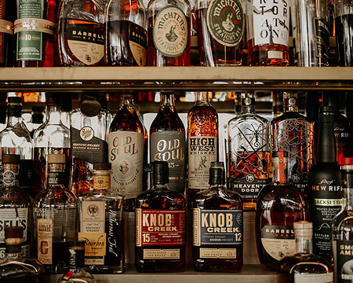
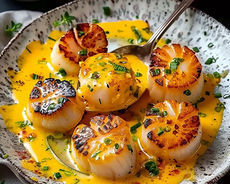
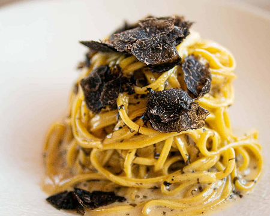
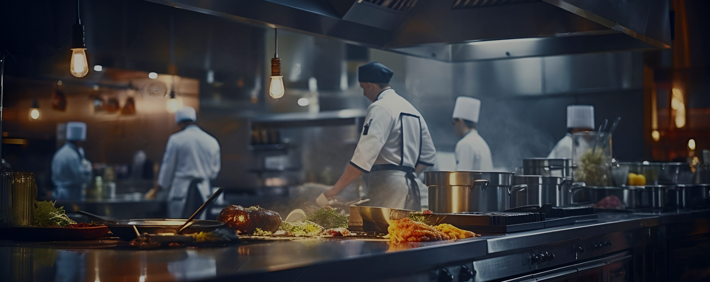

The enduring quality of Aeterna lies in the precision and passion of our team. Every member of our collective, from the culinary brigade to the front of house masters, is a dedicated artisan committed to the restaurant's timeless vision.
Our front of house masters are the silent conductors of your evening, experts in anticipation and seamless execution. They are trained not merely to serve, but to curate an atmosphere of relaxed perfection, ensuring every need is met with intuitive precision. This dedication to impeccable service transforms the dining room into an intimate sanctuary where the only focus is on the suspended moment of culinary pleasure.
Led by Chef Julian Martel, our staff embodies the blend of European classicism and modern innovation. We believe the true experience of luxury is crafted not only in the kitchen, but in the intimate and meticulous service delivered at your table. Meet the professionals who transform every night into a suspended moment.
The collaborative spirit is the true ingredient behind Aeterna's enduring quality. From the Sommelier who meticulously pairs each wine to the Pastry chef who crafts the final sweet impression, every member of our collective shares an unyielding commitment to the timeless vision of the restaurant. This synergy ensures a unified, flawless experience from the first greeting to the final farewell.
